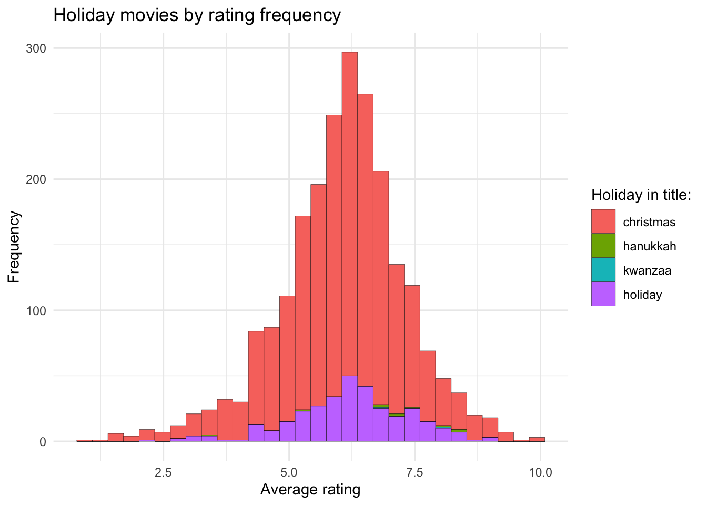

New names:
Rows: 2265 Columns: 15
── Column specification
──────────────────────────────────────────────────────── Delimiter: "," chr
(6): tconst, title_type, primary_title, original_title, genres, simple_t... dbl
(5): ...1, year, runtime_minutes, average_rating, num_votes lgl (4): christmas,
hanukkah, kwanzaa, holiday
ℹ Use `spec()` to retrieve the full column specification for this data. ℹ
Specify the column types or set `show_col_types = FALSE` to quiet this message.
• `` -> `...1`Project Write-up
Write-up
Your write-up should consist of three parts:
Introduction (1-2 paragraphs):
Brief introduction to the dataset. You may repeat some of the information about the dataset provided in the introduction to the dataset on the TidyTuesday repository, for instance. Imagine that your project is a standalone document and the grader has no prior knowledge of the dataset.
The dataset we chose is the holiday movies dataset from the TidyTuesday repository with dimensions of 2265x14. Our dataset looks at “holiday” movies: movies with “holiday”, “Christmas”, “Hanukkah”, or “Kwanzaa” (or variants thereof) in their title. This dataset has 15 variables, some of which being primary_title, original_title, year, runtime_minutes, genres, average_rating, and whether or not movies contain “Holiday”, “Christmas”, “Hanukkah”, or “Kwanzaa” in their titles.
We chose this dataset because we are interested in investigating the relationship between movie types and their public receptions, as well as how elements of movies change over time. We wondered whether the specific holiday the movies were written for played a role in this, i.e. do Christmas movies fare better than Hanukkah movies?
Question 1:
The title should relate to the question you’re answering.
Introduction (1-2 paragraphs):
Introduction to the question and what parts of the dataset are necessary to answer the question. Also discuss why you’re interested in this question.
Our first question was how does type of holiday affect a movie’s rating, and for each holiday, how does the movie’s age affect its rating? In order to answer this question we started by combining the holidays into one column using a pivot_longer function. Then we compared the different factors; the type of holiday movie it is, the movies’ average_rating, and the year it was made (ie. the age of the movie).
Approach (1-2 paragraphs):
Describe what types of plots you are going to make to address your question. For each plot, provide a clear explanation as to why this plot (e.g. boxplot, barplot, histogram, etc.) is best for providing the information you are asking about. The two plots should be of different types, and at least one of the two plots needs to use either color mapping or facets.
We then made some visualizations, a density plot showing the average rating density by movie type, and a scatterplot with line of best fit showing average rating by year for each holiday. A density plot is able to show us … and a scatterplot is able to show us …
Analysis (2-3 code blocks, 2 figures, text/code comments as needed):
In this section, provide the code that generates your plots. Use scale functions to provide nice axis labels and guides. You are welcome to use theme functions to customize the appearance of your plot, but you are not required to do so. All plots must be made with ggplot2. Do not use base R or lattice plotting functions.
library(ggplot2)
ggplot(filtered_holiday_movies, aes(x = average_rating,
color = holidays)) +
geom_density(size=1) +
labs(title = "Holiday movies by rating frequency",
x = "Average Rating",
y = "Density",
color = "Holiday in title") Warning: Using `size` aesthetic for lines was deprecated in ggplot2 3.4.0.
ℹ Please use `linewidth` instead.ggplot(filtered_holiday_movies, aes(x = year,
y = average_rating,
color = holidays)) +
geom_point(alpha = 0.6) +
geom_smooth(method="lm",
se = FALSE,
color = "gray36") +
facet_wrap(~ holidays) +
theme(axis.text.x = element_text(angle = 65,
vjust = 0.6)) +
labs(title = "Average Movie Rating by Year and Holiday",
x = "Year",
y = "Average Rating",
color = "Holiday in title")`geom_smooth()` using formula = 'y ~ x'Discussion (1-3 paragraphs):
In the Discussion section, interpret the results of your analysis. Identify any trends revealed (or not revealed) by the plots. Speculate about why the data looks the way it does.
Our first plot shows that overall it seems like Kwanzaa movies have the highest ratings overall, but this could be influenced by the fact that there are much fewer Kwanzaa movies in this dataset. This graph also shows us that Hanukkah movies have relatively high ratings, but are more variable compared to Christmas and holiday movies overall.
Our second plot shows that overall ratings for holiday movies have decreased slightly but have been fairly consistent. It also more clearly exposes a hole in our data for both Kwanzaa and Hanukkah movies.
These two graphs lead us to the conclusion that …
Question 2:
Same structure outlined for Question 1, but for your new question. And the title should relate to the question you’re answering.
We encourage you to be concise. A paragraph should typically not be longer than 5 sentences.
You are not required to perform any statistical tests in this project, but you may do so if you find it helpful to answer your question.
Introduction:
Our second question was how do movie run times vary over time? Have holiday movies gotten longer over time? Shorter? Is there a significant difference of run time over time? The variables we looked at in this section were runtime_minutes, year, and type of movie.
Approach:
For our second question we made a violin plot showing runtime by holiday, and a scatterplot showing runtime by year and holiday. A violin plot is able to show us … and a scatterplot is able to show us …
Analysis:
library(dplyr)
Attaching package: 'dplyr'The following objects are masked from 'package:stats':
filter, lagThe following objects are masked from 'package:base':
intersect, setdiff, setequal, unionChristmas <- filtered_holiday_movies %>%
filter(holidays == "christmas") %>%
filter(year >= 2000 & year <= 2023)
ggplot(filtered_holiday_movies, aes(x = runtime_minutes, y = holidays, fill = holidays))+
geom_violin()+
labs(title = "Runtime in Holiday movies",
x = "Runtime (in minutes)",
y = "",
fill = "Title contains")Warning: Removed 190 rows containing non-finite values (`stat_ydensity()`).
ggplot(filtered_holiday_movies, aes(x = year,
y = runtime_minutes,
color = holidays)) +
geom_point(alpha = 0.6) +
geom_smooth(method="lm",
se = FALSE,
color = "gray36") +
facet_wrap(~ holidays) +
theme(axis.text.x = element_text(angle = 65,
vjust = 0.6)) +
labs(title = "Movie Runtime by Year and Holiday",
x = "Year",
y = "Runtime in minutes",
color = "Holiday in movie title")`geom_smooth()` using formula = 'y ~ x'Warning: Removed 190 rows containing non-finite values (`stat_smooth()`).Warning: Removed 190 rows containing missing values (`geom_point()`).
Linear Model:
library(moderndive)
holidays_lm <- lm(data = filtered_holiday_movies, runtime_minutes ~ year * holidays)
get_regression_table(holidays_lm)# A tibble: 8 × 7
term estimate std_error statistic p_value lower_ci upper_ci
<chr> <dbl> <dbl> <dbl> <dbl> <dbl> <dbl>
1 intercept -1125. 83.4 -13.5 0 -1.29e+3 -9.62e+2
2 year 0.598 0.042 14.4 0 5.17e-1 6.8 e-1
3 holidays: hanukkah -314. 1399. -0.224 0.823 -3.06e+3 2.43e+3
4 holidays: kwanzaa -30868. 71303. -0.433 0.665 -1.71e+5 1.09e+5
5 holidays: holiday 1216. 133. 9.15 0 9.56e+2 1.48e+3
6 year:holidayshanukkah 0.144 0.696 0.207 0.836 -1.22e+0 1.51e+0
7 year:holidayskwanzaa 15.4 35.6 0.432 0.666 -5.45e+1 8.53e+1
8 year:holidaysholiday -0.602 0.066 -9.06 0 -7.32e-1 -4.71e-1Discussion
Our first plot shows that Kwanzaa movies have the shortest runtimes (although this again is likely due to the very small sample size of Kwanzaa movies), with Hanukkah being next, and Christmas having the longest with a concentration around 90 minutes. We also see that holiday movies in general are typically around 90 minutes but have a wide range.
Our second plot shows that runtime has increased slightly over the years, but has stayed fairly consistent for holiday movies overall.
Our linear model shows that…
These two graphs and linear model lead us to the conclusion that …